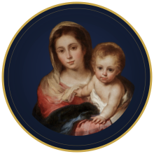

Quem sustenta
Benfeitores
Contribuem com recursos e confiança para sustentar o trabalho da Associação.

Arca Nossa Senhora da Providência
A Arca organiza recursos e processos para apoiar as escolas e ampliar o acesso de crianças à formação católica. Veja como cada parte contribui.
Contribuem com recursos e confiança para sustentar o trabalho da Associação.
Organiza e direciona os recursos, os critérios e os processos, prestando contas da sua atuação.
Identifica as necessidades e acompanha os alunos, mantendo sua responsabilidade educativa.
Pede a bolsa pelo site, recebe o apoio e cumpre os compromissos da parceria.